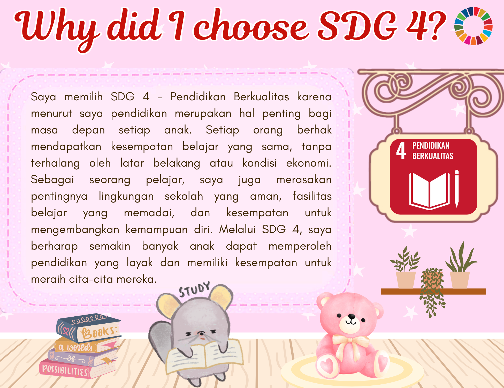

Setiap orang berhak mendapatkan kesempatan yang sama untuk memperoleh pendidikan yang baik, terlepas dari latar belakang mereka.

Pendidikan berkualitas membantu siswa memperoleh pengetahuan, mengembangkan keterampilan, dan mencapai potensi mereka.

Pendidikan memberikan lebih banyak kesempatan bagi orang-orang untuk menempuh pendidikan yang lebih tinggi dan meraih karier yang lebih baik.


Setiap siswa berhak belajar di lingkungan yang aman, nyaman, dan bebas dari perundungan.

Teknologi membantu siswa mengakses informasi, memahami materi, dan memperoleh pengalaman belajar yang lebih beragam.

Pendidikan membantu kita mengembangkan kemampuan dan mempersiapkan diri untuk melanjutkan pendidikan ke jenjang SMA atau SMK.